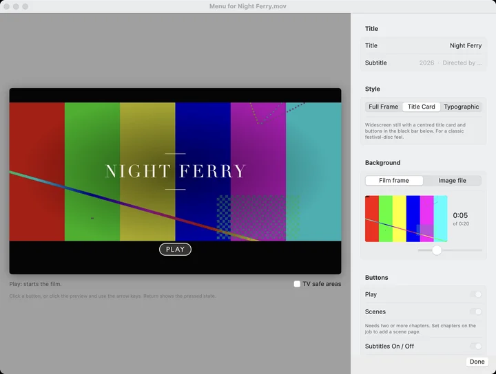

Menus are checked with libbluray, the library VLC uses to play Blu-ray menus, but players differ. Burn one disc and try it on your own player before sending a run to a duplicator.
What it does
- Menus
- Pick a frame from the film or your poster, choose one of three styles, and name your scenes. The preview shows the menu as a TV will draw it, and you can drive it with the arrow keys. On the disc, Play, scene buttons, subtitles on and off, and Top Menu all work from the remote.
- Frame rates
- Blu-ray has no 1080p at 25 or 29.97, so Lacquer carries those masters as 1080i without dropping a frame, and tells you when a format you picked would.
- Audio
- A 5.1 track is used as is. Six separate mono tracks from Resolve or Premiere are combined into 5.1, in either common channel order. Audio is AC-3, which every Blu-ray player decodes.
- Disc size
- Pick BD-25 or BD-50 and Lacquer sets the video bitrate from the running time. A film that can't fit is caught before encoding, not after.
- Subtitles and chapters
- Add an .srt and viewers can turn the subtitles on and off. Chapter stops go every 5 or 10 minutes or wherever you list them, and each one lands on its exact frame.
- HDR and older footage
- HDR masters are tonemapped to standard Rec.709, SD footage gets its color converted, and interlaced sources are deinterlaced before scaling.
- Job log
- Each job writes a log next to its output with every command it ran, so a problem disc can be traced.
See it work
Another screenshot


Questions
What can I give it?
A ProRes, DNxHR, H.264 or HEVC master. A 5.1 track is used as is, and six mono tracks are combined into 5.1.
What does it make?
A BDMV folder you can burn, a disc image you can upload to a duplicator, or an M2TS for Toast.
Do I need to install FFmpeg?
No. FFmpeg and tsMuxeR are built in.
Install
Open the disk image and drag Lacquer to Applications. Needs an Apple Silicon Mac with macOS 13 Ventura or later. FFmpeg and tsMuxeR are built in, so there's nothing else to install.
Source code and checksums
- Source codeGPL-3.0, 20 MB
- SHA-256 checksumsApp release files
- Release notesOn GitHub
DMG SHA-256: 55b6d14b38af399a5e3073912bca539b44570f233c12b3d602b037dad68a6b9f